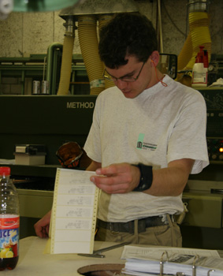
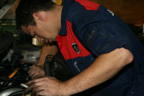

Die Eindrücke während des Bewerbungsgesprächs entscheiden darüber, welche Jugendlichen Sie sich als Lernende vorstellen können. Das Ziel jedes Bewerbungsgesprächs muss ein guter Dialog sein. Dafür braucht es eine angenehme Umgebung sowie genügend Zeit. Denken Sie daran: Für die meisten Jugendlichen handelt es sich um eine völlig neue Situation. Zeigen Sie Verständnis für anfängliche Unsicherheiten und bringen Sie den Jugendlichen Vertrauen entgegen. Im Lauf des Gesprächs «tauen» viele Jugendliche «auf». Dann lassen sich im Dialog viele Gemeinsamkeiten entdecken. Dabei zeigt sich oft, dass Jugendliche ausländischer Herkunft nicht mehr und nicht weniger fremd sind als andere Jugendliche.
So gelingt das Bewerbungsgespräch:
- Machen Sie sich vor jedem Gespräch eine Liste mit Fragen, die Sie unbedingt stellen wollen. Ausführliche Listen und Hilfsmittel finden Sie unter www.hb.dbk.ch (Merkblätter, Checklisten und Formulare).
- Nehmen Sie sich genug Zeit und reservieren Sie einen ruhigen Ort.
- Ziehen Sie wenn möglich jemanden Zweiten aus dem Betrieb bei – bei Bewerbungen von Jugendlichen anderer Herkunft z. B. jemanden, der selber ausländischer Herkunft und dafür geeignet ist. So können sie sich bei Unsicherheiten nach dem Gespräch austauschen.
- Laden Sie jemanden ruhig ein zweites Mal ein, wenn Sie noch offene Fragen oder Unsicherheiten haben.
- Zögern Sie nicht, auch die Eltern zu einem Zweitgespräch einzuladen, wenn für Sie der familiäre Hintergrund der Bewerber/innen und die Unterstützung der Eltern wichtig sind. Bei manchen Jugendlichen ausländischer Herkunft können allenfalls auch andere wichtige Bezugspersonen, wie gut integrierte ältere Geschwister oder andere Verwandte eingeladen werden.
- Gestalten Sie das Gespräch so, dass ein Dialog entsteht. Zeigen Sie, dass Sie Ehrlichkeit schätzen. Zeigen Sie Verständnis für anfängliche Unsicherheiten bei Bewerber/innen. Indem Sie die Jugendlichen von sich erzählen lassen und sie ermutigen, bei Verständnisschwierigkeiten nachzufragen, geben Sie den Jugendlichen die Gelegenheit «aufzutauen». Erzählen Sie selber auch vom Betrieb und von der Ausbildung (Philosophie, Grösse, Organisation, Arbeitszeiten, Anzahl Lernende, Betreuungsmodell für Lernende etc.).


- Um die Bewerbenden besser kennen zu lernen, können Sie zuerst Fragen zur Person stellen: Werdegang, Stärken, Schwächen, Hobbies, Konfliktverhalten etc. Wenn Sie die Person dann etwas besser kennen, dürfen Sie ruhig auch Fragen zum Umfeld (familiäre Situation, Wohnverhältnisse etc) oder zur ausländischen Herkunft stellen. Fallen Sie damit aber nicht gleich zu Beginn mit der Tür ins Haus.
- Nehmen Sie Ihr Bauchgefühl ernst. Aber hinterfragen Sie es auch. Dazu gehört, eigene Unsicherheiten oder mögliche Vorbehalte gegen Ende des Gesprächs anzusprechen.
- Formulieren Sie klar und konkret, was Sie von Lernenden erwarten (z. B. Pünktlichkeit, Höflichkeit, Zuverlässigkeit etc.) und stellen Sie klar, was Sie nicht tolerieren. Dazu gehört, dass Sie Ihre eigene Betriebskultur und die Werthaltungen offen legen. Sie können nach Lehrbeginn eine schriftliche Vereinbarung mit dem Lehrling diesbezüglich treffen.
- Teilen Sie dem/der Jugendlichen das weitere Vorgehen mit. Bis wann ist mit einem Entscheid zu rechnen? Wer meldet sich bei wem? Wie wird der Entscheid mitgeteilt (telefonisch, schriftlich, E-Mail)?
- Bei Absagen: Begründen Sie gegenüber den Jugendlichen Ihre Absage schriftlich und retournieren Sie die Unterlagen. Jugendliche sind froh um eine ehrliche und konstruktive Rückmeldung. Gibt es Verbesserungsmöglichkeiten, worauf man hinweisen könnte?
- Ganz wichtig: Schieben Sie nicht schulische und sprachliche Defizite vor, wenn diese Kompetenzen in genügender Weise vorliegen! Hat Ihre Absage betriebliche Gründe, teilen Sie dies mit. Jugendliche sind so zwar im ersten Moment enttäuscht, aber nicht demotiviert und demoralisiert.